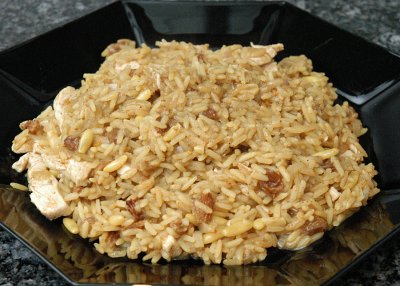

| Zutaten für 2-3 Personen: |
|
| 1 | mittlere Zwiebel |
| 2 | Knoblauchzehen |
| 2 | grosse Pouletbrüstchen |
| Salz, Pfeffer | |
| 4 El | Olivenöl |
| 150 g | Parboiled-Reis |
| 2 El | Pinienkerne oder Mandelsplitter |
| 2 El | Rosinen |
| 1 Prise | Zimt |
| 1/4 Tl | Currypulver |
| 1 Msp | Cayennepfeffer |
| 1/2 Tl | Korianderpulver |
| 3 dl | Hühnerbouillon |
| 1/2 Bund | Petersilie |
Zubereitungszeit: 40 Minuten
Zwiebel und Knoblauchzehen schälen und fein hacken.
Pouletbrüstchen in Streifen schneiden. Mit Salz und Pfeffer würzen. In einem Schmortopf in der Hälfte des Olivenöls kurz aber kräftig anbraten. Aus der Pfanne nehmen.
Restliches Olivenöl zum Bratensatz geben. Zwiebel und Knoblauch andünsten. Darin Reis, Pinienkerne oder Mandelsplitter und Rosinen andünsten. Dann Zimt, Curry, Koriander und Cayennepfeffer darüber streuen und kurz mitdünsten damit sich die Aromen entfalten können.
Mit der Bouillon ablöschen. Die Pouletstreifen wieder beifügen und alles zugedeckt weich kochen; die Bouillon soll dabei praktisch vollständig vom Reis aufgenommen werden.
Die Petersilie fein hacken. Am Schluss unter das Pilaw mischen. Wenn nötig nachwürzen und sofort heiss servieren.
Tipp: Kocht man das Gericht für Gäste gibt man nur die Hälfte der Bouillon bei und kocht den Pilaw halb gar. Kurz vor dem Servieren fügt man die restliche Flüssigkeit zu und kocht das Gericht fertig.
Pro Portion ca 28g Eiweiss, 27 g Fett, 46 g Kohlenhydrate, 558 Kalorien oder 2335 Joule
d'Chuchi Heft 10, Oktober 1998 Seite 45
Super gut!